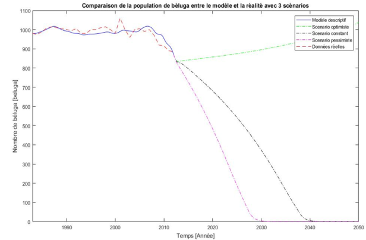
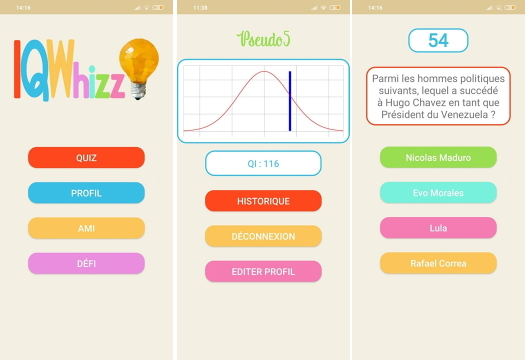

+32 (0)473 228 825
Portfolio en complément au CV pour illustrer les différents projets réalisés durant le cycle d'étude de bioingénieurie en chimie et bioindustries, option analyse et gestion de l'information à l'UCLouvain
A l'aide d'une libraire C++ (Chaste) et d'analyse d'image, ce mémoire s'est inscrit dans un projet de modélisation avec comme objectif de modéliser l'apparition et le développement des lumières dans la thydoïde.
Ce projet, réalisé dans le cadre du cours Process-based modeling in bioscience engineeering, avait pour objectif de créer un modèle qui simulait la population de Béluga, le calibrer avec des données déjà disponible et établir divers scénarios quand à la possible évolution de cette population. Rapport complet disponible ici
Dans le cadre du cours Conception orientée objet et gestion de données, un projet a du être réalisé en équipe. Il consistait en une application android avec les spécifications suivantes: une base de données locale pour les questions et les réponse, ainsi que pour les utilisateurs, des QCM construit procéduralement et une "évaluation du QI" et comparant les différents utilisateurs entre eux. J'ai travaillé sur le code "Back-End" et la structure de la base données.
Le cours Questions spéciales de gestion de l'information proposait la réalisation d'un projet libre en équipe, il a porté sur la réalisation d'un réseau de neurone pour identifier des extraits audios avec un chant d'oiseau et sans. Les données provenaient d'un concours.